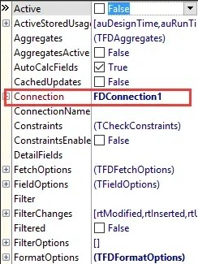
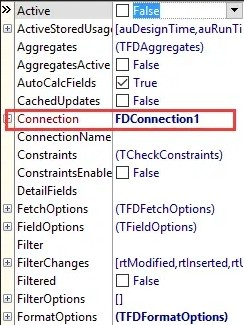
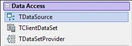
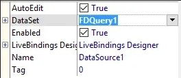

从其它平台迁移而来
1.在FireDAC选项卡中找到TFDQuery控件，放到窗体上，并把Connection属性设置为准备好的数据库连接控件上。
 

2.在需要查询或执行SQL语句的位置写入类似以下的代码：
1
2
3
4
5
6
7
8
|
//查询，有返回集
FDQuery1.SQL.Text := 'SELECT * FROM DBTable WHERE id = :id';
FDQuery1.ParamByName('id').AsInteger := 1;
FDQuery1.Open();
//执行SQL语句，无返回集
FDQuery1.SQL.Text := 'DELETE FROM DBTable WHERE id = :id';
FDQuery1.ParamByName('id').AsInteger := 1;
FDQuery1.ExecSQL;
|
3.若查询结果需要连接到数据集，则在DataAccess选项卡中找到TDataSource控件，放到窗体上，并把DataSet属性连接到TFDQuery控件。然后把数据感知控件（如cxGrid等）的DataSource属性连接到TDataSource控件。


4.若只需要取出查询结果并进行后续处理，可使用如下代码取出结果：
1
2
3
|
id := FDQuery1.FindField('id').AsInteger;
DeptName := FDQuery1.FindField('deptname').AsString;
Money := FDQuery1.FindField('money').AsFloat;
|